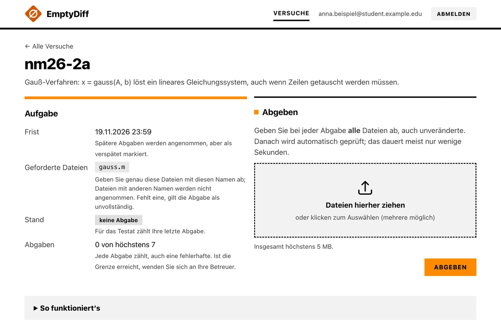
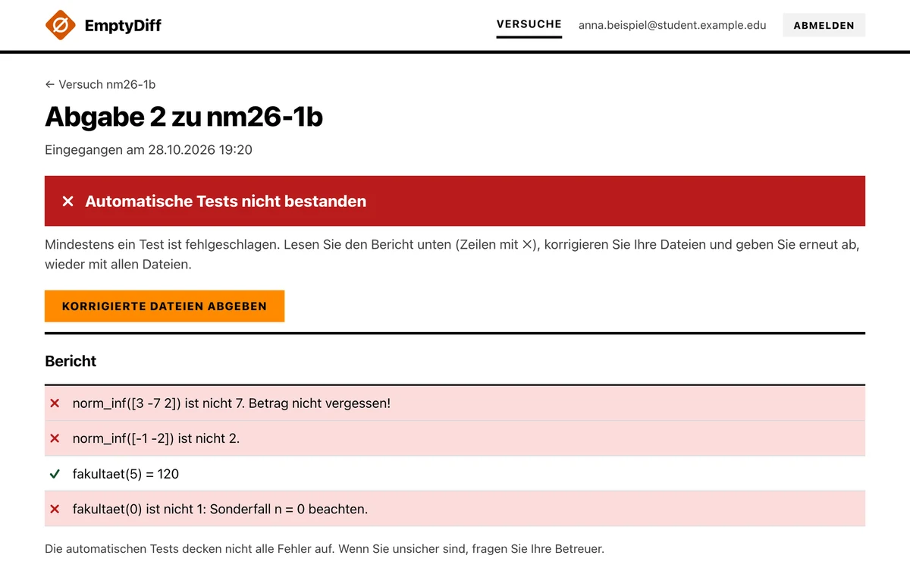
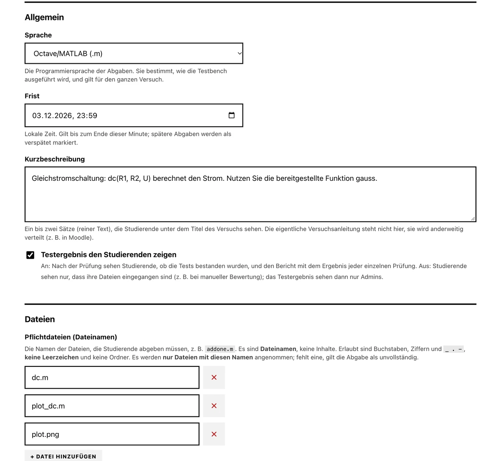
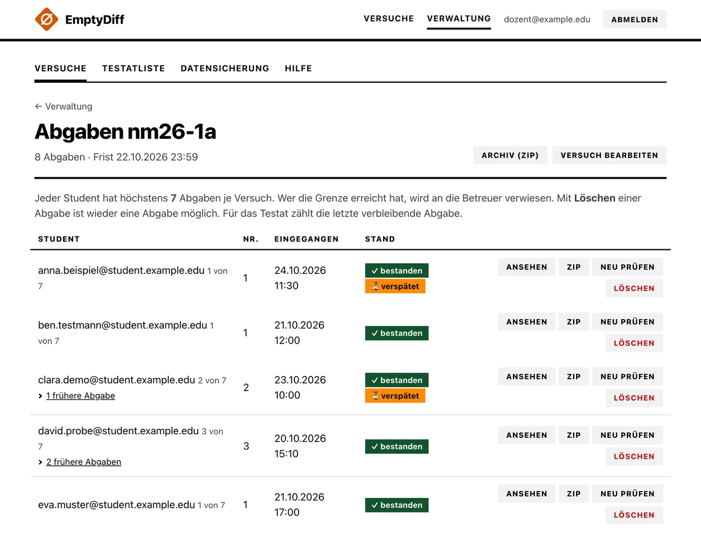
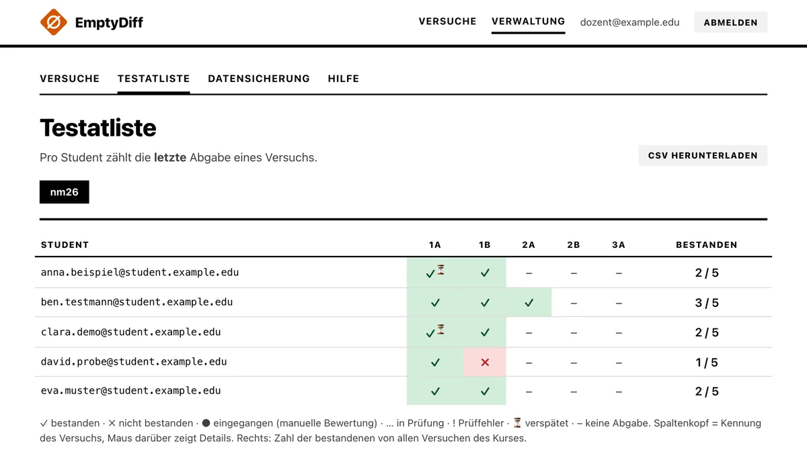

EmptyDiff
EmptyDiff prüft Abgaben in Programmierpraktika automatisch. Studierende
laden ihre Dateien hoch und sehen sofort das Ergebnis. Lehrende schreiben
je Versuch eine Testbench, also einen kurzen automatischen Test, sehen alle
Abgaben und führen die Testatliste. Die Prüfung läuft in einer Sandbox. Das
System läuft auf Linux (empfohlen: Debian oder Ubuntu) und prüft aktuell
Octave- und MATLAB-Dateien (.m). Es ist freie Software unter
der GPLv3.
Quelltext auf GitHub Installation
Wofür das System da ist
In einem Praktikum geben Studierende Programme ab, oft Dutzende pro Versuch. EmptyDiff nimmt diese Abgaben entgegen und führt sofort die Tests aus, die die Lehrenden für den Versuch geschrieben haben. Die Studierenden sehen gleich, was stimmt und was nicht, und können erneut abgeben (höchstens so oft, wie eingestellt; Standard sind 7 Abgaben). Die Lehrenden sehen alle Abgaben und eine Testatliste.
Die automatischen Tests ersetzen nicht, dass jemand den Code liest. Sie nehmen den Betreuern die Routineprüfung ab.
Ablauf für Studierende
- Anmelden: Studierende geben ihre Hochschul-Mailadresse ein und erhalten einen Einmalcode per Mail. Es gibt keine Passwörter.
- Hochladen: Zu jedem Versuch laden sie die verlangten Dateien hoch. Angenommen werden nur Dateien mit den vorgegebenen Namen. Nach der Frist sind Abgaben weiter möglich, sie werden als verspätet markiert.
- Prüfen: Die Abgabe läuft in einer Sandbox ohne Netzwerk und mit Grenzen für Zeit und Speicher, immer eine nach der anderen.
- Bericht: Nach wenigen Sekunden steht das Ergebnis da: für jede Prüfung ein Haken oder ein Kreuz mit einem Hinweis.


Für Lehrende
Alles läuft im Browser: Kurse und Versuche anlegen, Frist und geforderte Dateien festlegen, die Testbench schreiben, den Versuch für Studierende sichtbar schalten. Neue Versuche sind zunächst verborgen. Lehrende sehen alle Versuche und können wie Studierende abgeben, um die Testbench auszuprobieren.

Eine Testbench besteht aus wenigen Zeilen mit
check(...) und check_close(...). Das Urteil kommt
nie aus dem, was das Programm der Studierenden ausgibt, sondern aus einer
Ergebnisdatei, die nur diese beiden Funktionen schreiben. Bestanden ist eine
Abgabe, wenn es mindestens eine Prüfung gibt, alle bestehen und die
Testbench bis zum Ende durchläuft.
x = addone(1);
check(x == 2, 'addone(1) liefert 2', 'addone(1) liefert nicht 2');
check_close(addone([1 2]), [2 3], 1e-12, 'Vektoren klappen', 'Vektoren falsch');Zu jedem Versuch gibt es eine Liste der Abgaben. Dort lässt sich der Code ansehen, eine Abgabe als ZIP laden, nach einer Korrektur der Testbench neu prüfen oder löschen.

Die Testatliste zeigt je Student und Versuch das Ergebnis der letzten Abgabe und lässt sich als CSV herunterladen.

Außerdem gibt es: einen Kurs fürs nächste Semester klonen, Versuche oder alles sichern und wiederherstellen, und eine Datenschutzerklärung, die aus der Konfiguration entsteht. Die Oberfläche gibt es auf Deutsch und Englisch.
Technik und Grenzen
- Python mit Flask hinter Apache (
mod_wsgi), SQLite als Datenbank, eine Konfigurationsdatei. Es werden nur Pakete der Distribution verwendet, keinpip, kein Docker, kein Node. - Abgaben laufen in einer
bubblewrap-Sandbox ohne Netzwerk, mit Grenzen für CPU, Speicher, Prozesse und Ausgabe, und strikt nacheinander. - Die Daten werden nach einer einstellbaren Frist automatisch gelöscht (Standard 730 Tage). Es gibt keine Tracker und keine externen Ressourcen.
- Alles, was von der Programmiersprache abhängt, steckt in einem Adapter je Sprache. Heute gibt es nur Octave/MATLAB.
- Der Programmcode der Studierenden und die Testbench laufen im selben Octave-Prozess. Ein gezielter Angriff auf die Prüfung wird erschwert, ist aber nicht ausgeschlossen.
- Weil die Prüfungen nacheinander laufen, ist das System für kleine bis mittlere Lehrveranstaltungen gedacht. Auf einem Raspberry Pi 4 waren 200 gleichzeitige Abgaben einer einfachen Aufgabe nach etwa einer Minute geprüft. Versuche mit Plots, echter Mailversand und TLS sind dort noch nicht erprobt.
- Es gibt keine automatischen Sicherungen. Lehrende laden sie in der Weboberfläche herunter.
Installation
Voraussetzungen
- Ein Linux-Server mit Root-Zugriff und
apt. Empfohlen sind Debian oder Ubuntu; getestet ist bisher nur Debian 13. Bei Ubuntu braucht man Python 3.11 oder neuer (ab Ubuntu 24.04). - Ein DNS-Name für den Server und die Ports 80 und 443 aus dem Internet für das Zertifikat. Für geschlossene Netze gibt es zwei Alternativen: reines HTTP oder den Betrieb hinter einem Reverse Proxy (siehe unten).
- Ein SMTP-Server, über den die Einmalcodes verschickt werden.
- Unprivilegierte User-Namespaces im Kernel (Debian-Standard; bei Ubuntu 24.04
kann AppArmor sie einschränken), die
bubblewrapbraucht. Der Selbsttest voninstall.shzeigt, ob die Sandbox läuft.
Abhängigkeiten (Pakete der Distribution, install.sh installiert sie)
apache2undlibapache2-mod-wsgi-py3(Zertifikate über das enthaltenemod_md)python3(ab 3.11) undpython3-flask; der übrige Code nutzt nur die Standardbibliothekbubblewrapundutil-linux(fürprlimit)- für Octave/MATLAB:
octave, dazugnuplot-noxundfonts-freefont-otf, damit Plots ohne Bildschirm laufen
Ablauf
sudo apt-get install -y git
sudo git clone https://github.com/andreas-schwenk/EmptyDiff /opt/emptydiff
cd /opt/emptydiff
sudo ./install.sh --accept-acme-terms
Beim ersten Lauf legt das Skript die Vorlage
/etc/emptydiff/config.toml an und hält an. In dieser einen
Konfigurationsdatei stehen Servername, erlaubte Mail-Domains, Admins,
Mailserver und die Angaben für die Datenschutzerklärung. Man öffnet sie in
einem beliebigen Editor (zum Beispiel nano) und ändert den
Inhalt auf die eigenen Werte. Ein Auszug als Beispiel, mit Platzhaltern:
base_url = "https://emptydiff.example.org"
[auth]
allowed_domains = ["student.example.edu"]
admins = ["lecturer@example.edu"]
[mail]
host = "smtp.example.org"
sender = "emptydiff@example.org"
[privacy]
controller = "Example University"
contact_email = "lecturer@example.edu"Danach startet man das Skript noch einmal:
sudo ./install.sh --accept-acme-terms
Das Skript installiert die Pakete, legt den Benutzer emptydiff
an, erzeugt die Dateien für Apache und systemd, prüft die Sandbox und startet
die Dienste. Ein Update ist derselbe Aufruf nach git pull.
Ohne öffentlichen DNS-Namen gibt es zwei Wege: base_url mit
http:// für ein geschlossenes Testnetz (Codes und Sitzungen
laufen dann unverschlüsselt), oder den Betrieb hinter einem Reverse Proxy,
der TLS beendet und das System unter einem Pfad seiner Seite anbietet.
Beides steht in der
INSTALL.md
(englisch), ebenso Betrieb, Update und die Hinweise zum Raspberry Pi.
Weiteres
- Quelltext auf GitHub
- INSTALL.md: Installation und Betrieb (englisch)
- CHANGELOG.md: was das System kann
Zum Namen: Wenn bei diff nichts abweicht, ist der Unterschied
leer. Dann gibt es den Haken. Das ist nicht wörtlich gemeint: Der Haken
heißt nur, dass die Tests der Lehrenden bestanden sind.